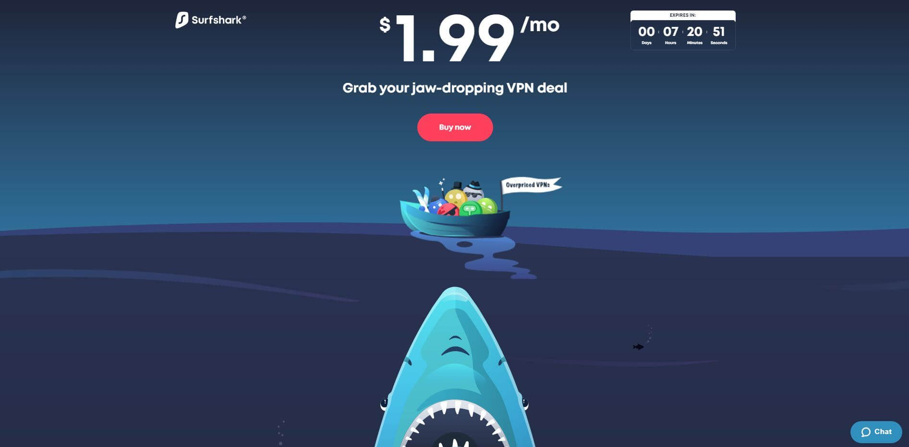

Surfshark Review
9.1
Very Good
Our verdict: While Surfshark may be a new contender in the line of top-rated VPNs, it still packs a powerful punch. The VPN offers undeniable access to geo-restricted content, impressive speeds and reliable security.

Summary Review
Established in 2018, Surfshark is one of the youngest players in the VPN industry. Despite being a relatively new provider, it performed really well in tests for streaming, torrenting, speed, privacy, and security. Boasting of AES-256 encryption, OpenVPN, and IKEv2 support, Surfshark also enforces a strict no-logs policy as well as a kill switch feature to keep your information secure in case your connection drops.
In addition, they support P2P on most servers, split tunneling, VPN chaining, as well as URL and adblocking. Oh, and have we mentioned that they now have a total of 1,040+ servers in 61 countries? As if that’s not enough for an up and coming VPN service, Surfshark works great for streaming and bypassing even the most challenging geo-blocks so it’s an excellent choice for those who can’t live without their Netflix, Hulu, or BBC Iplayer. And unlike other VPNs that limit the number of devices, Surfshark allows unlimited simultaneous device connections with a single subscription! This is definitely a strong candidate if you’re in the market for a budget-friendly, fast, reliable, and long-term VPN service.
Privacy / Anonymity
Surfshark doesn’t lack in terms of security either. It offers all of the basics that you’ve come to expect such as DNS leak protection, automatic kill switch, secure encryption, and their very own version of a Double VPN called MultiHop which provides an extra layer of protection. Surfshark also offers a lot of extras such as the HackLock feature which alerts you in case of a data leak as well as a CleanWeb feature that effectively combats any tracking, phishing, or malware threats.
If you are tired of seeing random ads popping every time you’re online, you’d be happy to know that they now offer a special search tool that does not retain your browsing history. This means advertisers can’t use your preferences and browsing history to bombard you with tailored ads. If you ever find yourself in a country with restricted internet access, Surfshark’s got you covered with its Camouflage Mode which uses specialized servers to bypass network firewalls and the likes. And yes, Surfshark works in China but the manual setup needed might be a challenge. But hey, if there’s a will, there’s a way! We’d be wary about trying to use any VPN service in China though.
One of the more important concerns about privacy and VPNs is whether or not the provider keeps logs. Surfshark does collect some information such as your email address, password, and billing information but these are required only for maintaining your account. They don’t collect session information, IP addresses, bandwidth used, browsing history, network traffic, and connection time stamps. Also, this VPN provider is based in the privacy-friendly British Virgin Islands which means it is outside the Eyes Alliance jurisdiction. If there’s one thing to worry about, it’s that they may collect third-party advertising identifiers for marketing purposes but you can easily remedy this by opting-out in your app settings.
Streaming and Torrenting
Many VPNs promise to unblock geo-locked content but then never really deliver. Not Surfshark. Not only are they very upfront about it but they also went ahead and named 14 countries where it currently works including the US, Australia, Italy, France, and Japan. It was able to consistently bypass even the toughest VPN blocks and you’ll be impressed with the fast loading times and excellent video quality. Your streaming fix will be more than satisfied as you’ll also gain access to Hulu, Amazon Video, and BBC iPlayer.
Surfshark also supports P2P file sharing and has optimized many of its servers for torrenting. It is fully compatible with BitTorrent and uTorrent as well as streaming players such as Popcorn Time, VLC, and Ace Player.
Speed and Reliability
Generally, you can expect a small loss in speed when you’re using a VPN service depending on how strong the encryption method is. However, this loss shouldn’t be too drastic. After all, what good is a VPN when you can hardly browse the web or stream any video because of too much lag and buffering? Fortunately, Surfshark performed really well in all of our tests. Before trying to connect to any of their servers, we had a download speed of around 40.70 Mbps. The speed went down to 25.40 Mbps while connected to the US server and around 20.07 while using a UK server. The speed is pretty much consistent and still fast enough for seamless HD streaming, torrenting, and even online gaming. We tried connecting to a server in Asia, particularly Japan and still got an impressive speed of 13.29 Mbps. All in all, the results were excellent and we didn’t notice any connection failures or speed drop during the tests.
Platforms and Devices
As we have mentioned previously, one thing that sets Surfshark apart from the competition is that it offers unlimited simultaneous devices with just one subscription. It offers secure browser extensions for Chrome and Firefox and is compatible with major platforms such as macOS, Windows, iOS, and Android. If you want to use Surfshark for your Playstation, Xbox, Apple TV, Linux, Fire TV and game consoles, you may refer to their website for the manual installation guides.


Server Locations
Surfshark was established only in 2018 and yet it had managed to build an impressive network of servers in such a short time. This VPN now offers 1,040+ servers in over 61 countries.


Customer Service
Surfshark’s customer service is awesome. They have a 24/7 live chat option which you can find right on their homepage. You needn’t even go to their help page! We tried to submit a question and we didn’t have to wait long. In less than a minute, a representative attended to our query in a polite and professional manner. The agent was friendly and informative. In addition to the live chat option, Surfshark’s support page has a knowledge base full of tutorials, general info, and common billing questions.
Pricing
Surfshark currently offers 3 subscription plans. A month-to-month subscription is available for $11.95 while a 12-month subscription can be had for only $5.99 per month. That’s 50% savings right there! The best deal however is the 2-year plan as the monthly fee is reduced to $1.99 per month, making this one of the cheapest VPN services out there. All of these plans are covered with their 30-day money-back guarantee.
Surfshark User Reviews
- "Does what it says on the tin, have not had any issues and just works. 5/5"
- "Great price, good speeds, works as expected."
- "Surfshark is very responsive quick easy to use and lots of country's to choose from and good on price"